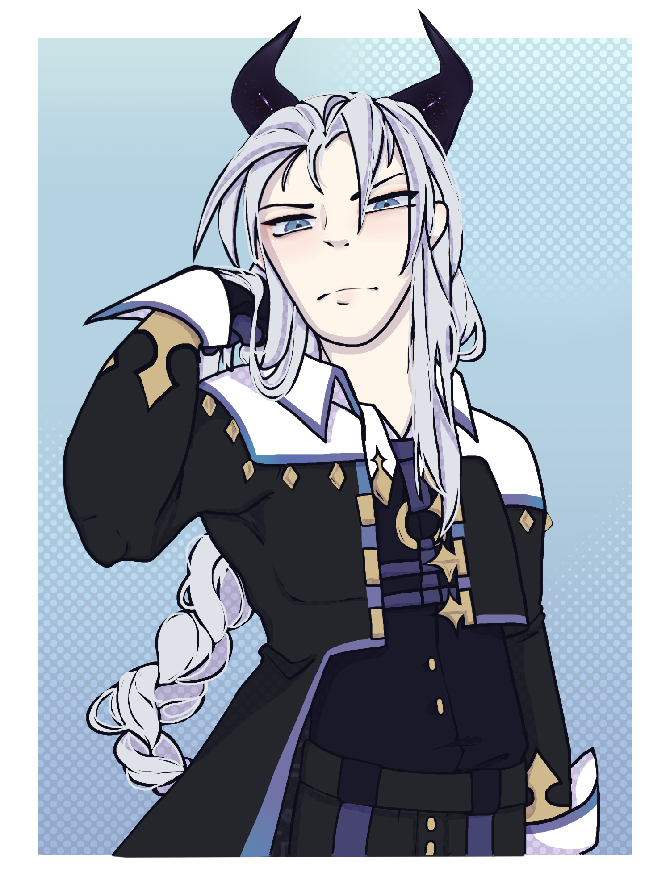

Odyn
Congratulations. You Are Most Akin To Odyn, The Kirin Of The Triad. You Are Cold And Calculating, But That Has Gotten You Far In This Unforgiving World. Your Dream Is To Have Complete Control Over Everything, And Everyone. You Are Hard To Read, As Your Expression Is Generally Stoic In Every Situation. When You Do Express Some Emotion, It Is Most Associated With Success Or Failure. There Are No Cracks In Your Armor, As Your Methodical Planning Has Led You To Where You Are Now. Always Two Steps Ahead, You Have Thought Up Every Possible Outcome In The Game Of Life. Keep Up The Hard Work, And You Will Be About As Perfect As A God.